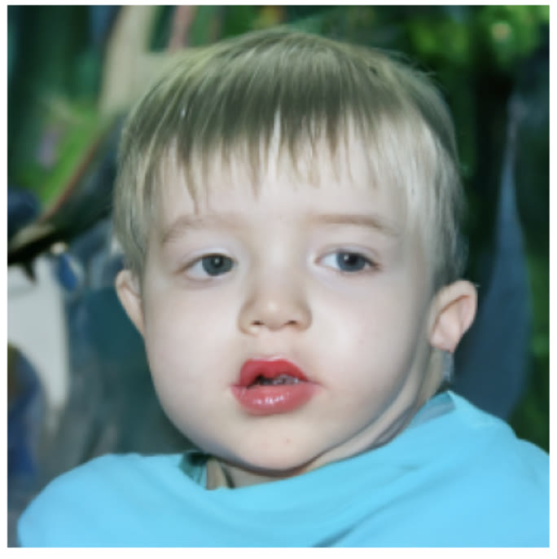
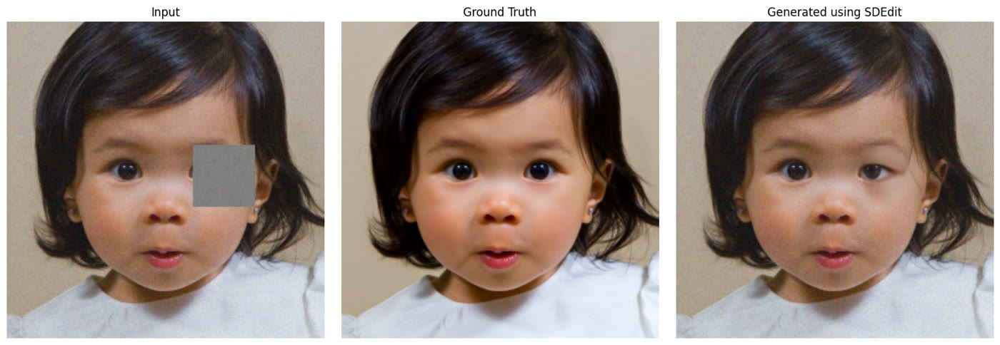
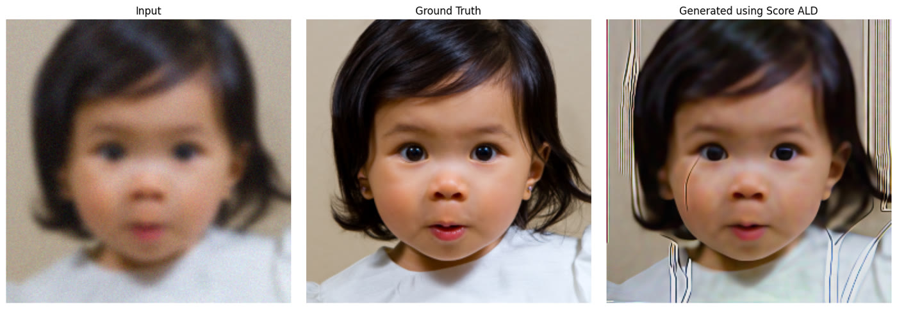

Back to all work
Diffusion Models
Diffusion models generate images by learning to reverse a gradual noise process. This project explores how pretrained diffusion models handle denoising, generating faces from pure noise, and restoring damaged images.

Approach
In the forward process, noise is added until an image is pure noise. A network learns to predict that noise at each step, and sampling runs the process backward to recover a clean image. For inpainting and deblurring, Diffusion Posterior Sampling keeps each step consistent with the damaged input.
Results



| Noise steps | 300 | 500 | 700 |
|---|---|---|---|
| PSNR | 25.72 | 29.58 | 30.91 |
| LPIPS | 0.122 | 0.087 | 0.088 |
| Method | SDEdit t=500 | ScoreALD [10, 20] | ScoreALD [20, 10] |
|---|---|---|---|
| PSNR | 20.14 | 23.13 | 19.49 |
| LPIPS | 0.445 | 0.354 | 0.341 |